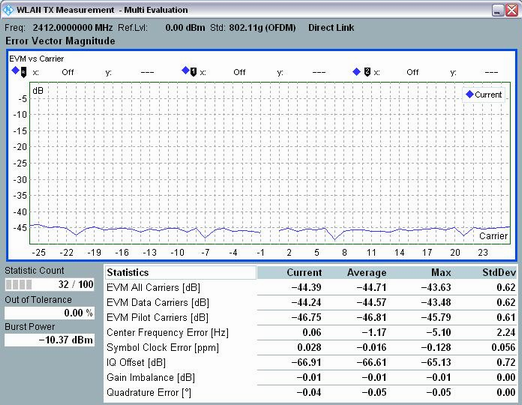

View Error Vector Magnitude (EVM)
This section applies to the following detailed views:
- "EVM vs Symbol"
- "EVM vs Carrier"
- "EVM vs Chip" (DSS only)
Each of the detailed views shows a diagram and a statistical overview of results.

EVM vs carrier
Diagram contents:
- EVM vs symbol
The diagram contains one measurement result per OFDM symbol. - EVM vs carrier
The diagram contains one measurement result per subcarrier. The subcarriers are labeled according to IEEE 802.11. Subcarrier 0 is associated with the center frequency. It is not measured. The subcarrier structure depends on the standard, see "Physical Layer". - EVM vs chip
Each value is RMS averaged over the samples of a chip. The view is only relevant for DSS signal.
For query of the diagram contents via remote control, see:
For a description of the statistical overview, refer to:
For additional information, refer to "Common View Elements".